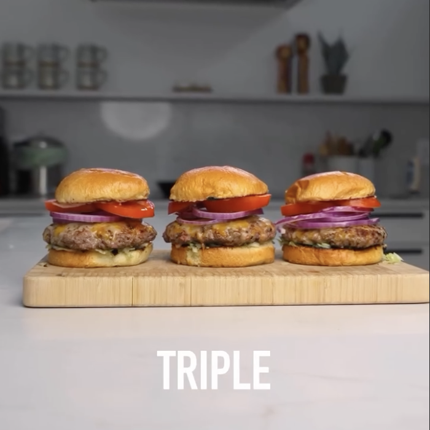

Hamburguesa con tocino
Ingredientes:
- 150g de carne molida 96/4
- 1 rebanada de tocino de pavo (Maple turkey bacon)
- Pan brioche de Aldi
- Mayonesa ligera y ketchup
- Queso Kraft individual o queso parcialmente descremado
- Verduras de tu elección (usé cebolla roja, tomate y lechuga iceberg)
Instrucciones:
- Agarra la carne y moldea en forma de carne para hamburguesa.
- Rebana en cuadritos el tocino.
- Infunde el tocino con la carne. Presiona la carne con el dedo en el centro.
- Prende la sartén a fuego medio.
- Corta la lechuga, el tomate y la cebolla.
- Cocina la carne en la sartén de 2 a 3 minutos.
- Después voltea la carne y añade el queso. Tapa por otros dos minutos.
- Tosta el pan y embárralos de mayonesa light y metelos al sartén a fuego lento.
- Mezcla Mayonesa Light y Ketchup sin azúcar para hacer aderezo para el pan.
- Arma hamburguesa a su propio gusto.